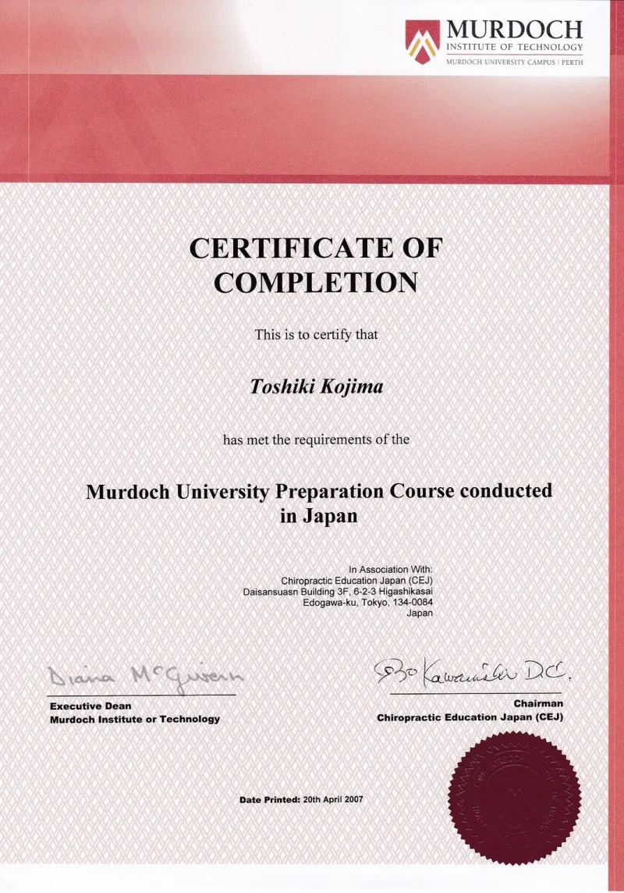
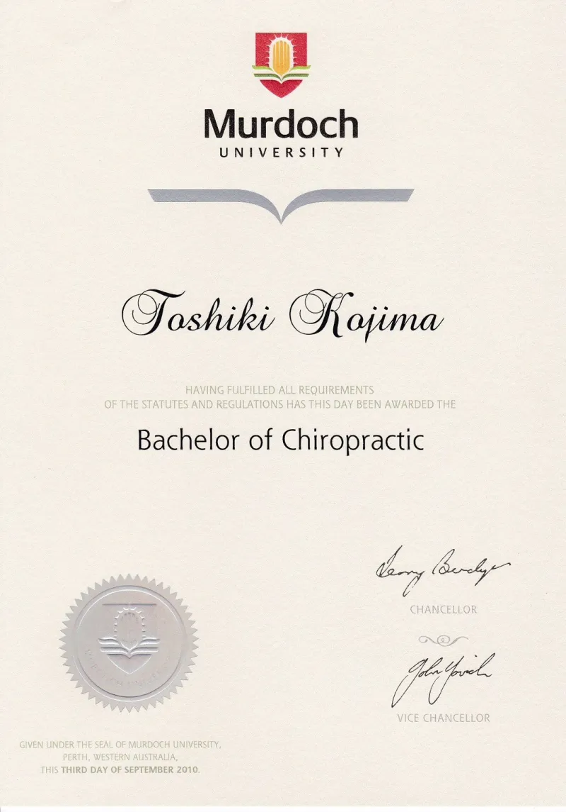
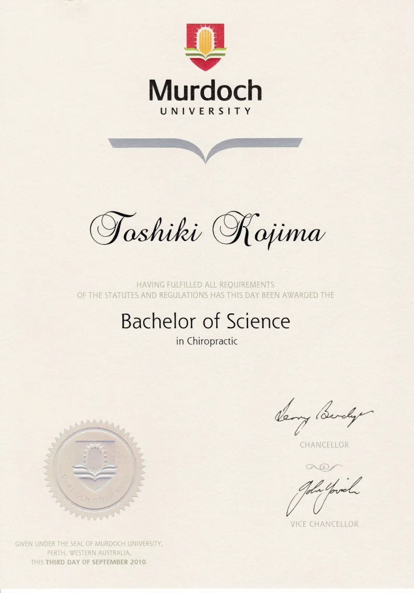
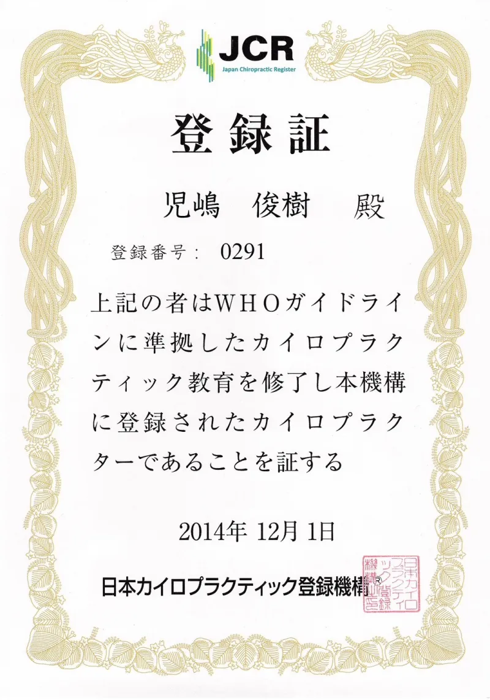
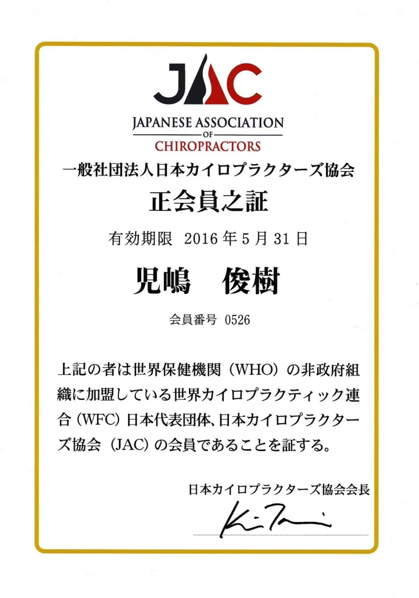
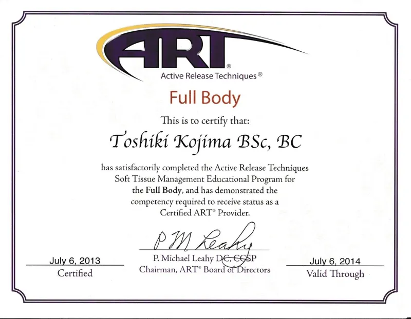
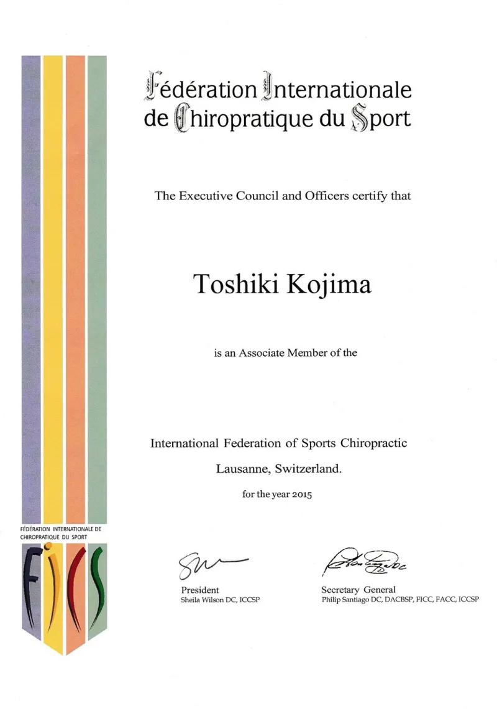
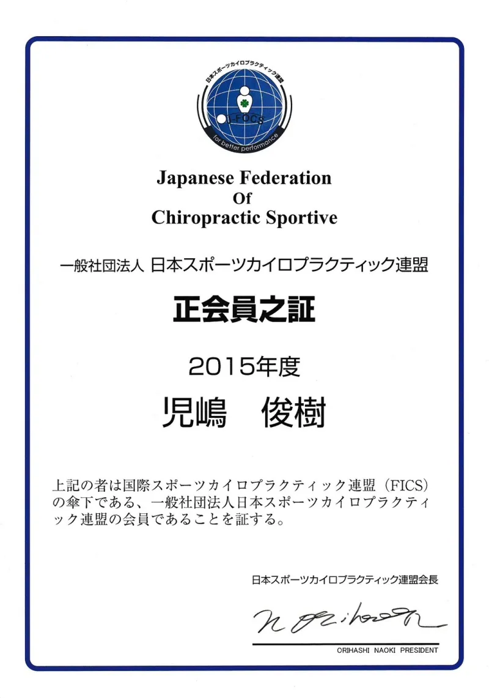
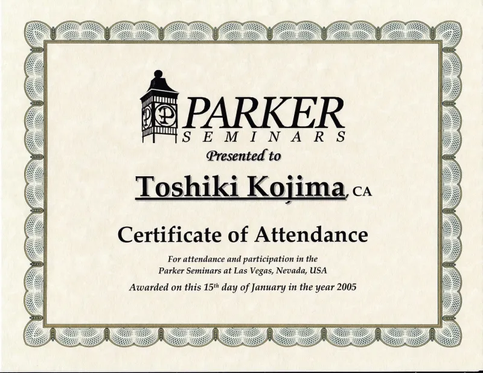
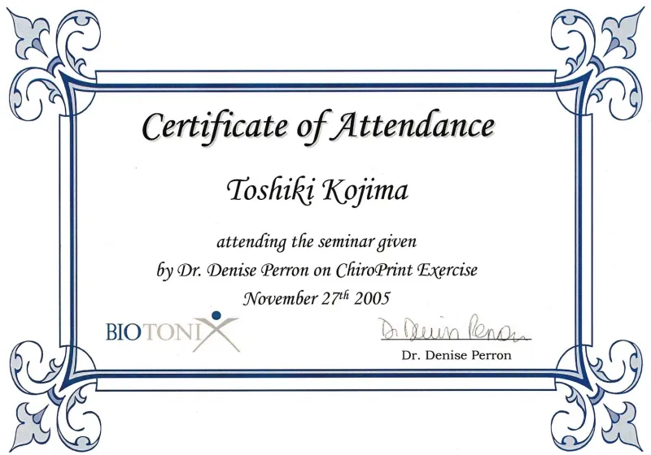

REPRESENTATIVE
私は子どもの頃に母親を亡くし、幼稚園の頃から医者になることを考えていました。成長するにつれて車が趣味となり、高専を卒業した後は日本のブレーキサプライヤーに就職しました。その後も順調に仕事は継続し、ドイツの会社への転籍によって世界が大きく広がっていきました。
しかし人生はそんなに上手くいかず、24歳の時スノーボードの事故に逢い、その翌日から背中の激痛と過呼吸に苦しむ日々が始まりました。
整形外科でのレントゲン・MRI検査から始まり、呼吸器系、循環器、内科・泌尿器科など一般的に行えるすべての検査を行い、それらの結果はすべて異常なく、精神的なものだろうと精神科に回されました。
けれど、1週間に2、3度は倒れ、救急車で運ばれる日々が半年、会社にも行けず、車・電車にも乗れず、毎日どう命を終えようか、そんなことばかり思っていました。
そんな時上司が「疑ってもいい、俺を信じなくてもいいからカイロプラクティックに行かないか」と言ってくれたことが私の人生を大きく変えていきました。
初回の時カイロの先生に「ここが悪いと過呼吸になるよ」と言われ、大人なのに情けないくらいに泣き崩れてしまったことを今でもはっきりと覚えています。悪いところがちゃんとあったんだ、医者には噓つきのように思われていたのをひしひしと感じていたから、本当に安堵し赤ちゃんのように泣いていました。
それでも体が回復し元通りに動けるようになるまで3か月以上かかりましたが、現在も元気に日々を過ごせているのは上司があの時カイロプラクティックに連れて行ってくれた結果です。
27歳で会社を退職し、28歳でMURDOCH大学に入学、33歳から松戸で施術をスタートしました。
現在は八柱で営業していますが、場所は小さいけれど志は高く、出会う方々の悩みが解決し、健康で生きていくサポートをするために頑張っています。
人生100年時代、
最後まで動き続ける体と頭を
日々樹で作っていきましょう。
Murdoch大学卒業をはじめ、国内外の資格・認定を取得しています。

Murdoch大学 準備コース修了
Bachelor of Chiropractic
Bachelor of Science in Chiropractic
JCR 登録証
JAC 正会員之証
ART 認定プロバイダー
FICS 準会員
日本スポーツカイロ連盟 正会員
Parker Seminars 修了
Biotonix ChiroPrint 修了